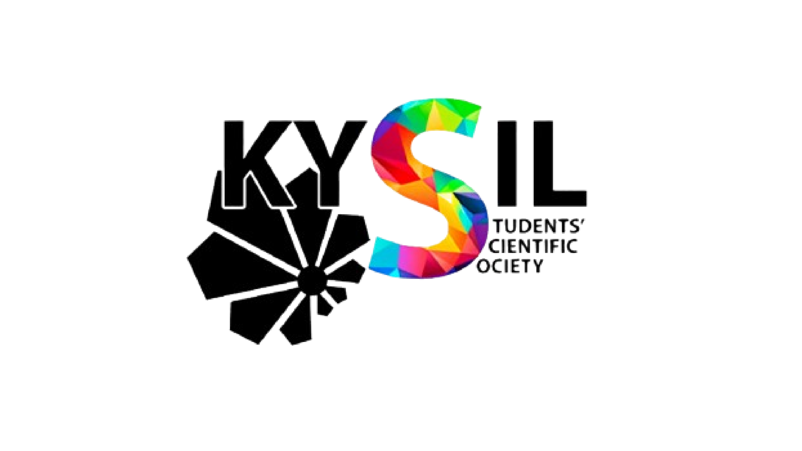
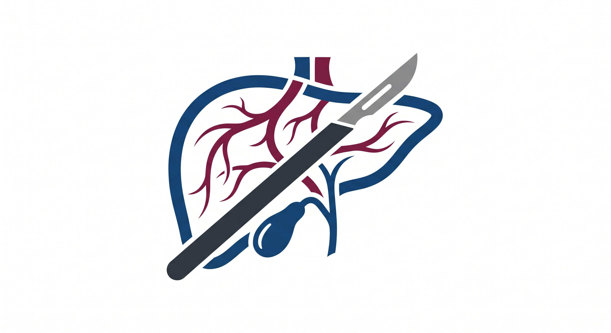

Організатори форуму Forum Organizers

СНТ імені О.А. КиселяSSP named after O.A. Kysil
Найстаріше студентське наукове товариство Східної Європи, яке цього року відзначає 145-річчяThe oldest student scientific society in Eastern Europe, which is celebrating its 145th anniversary this year
НМУ імені О.О. БогомольцяBogomolets National Medical University
Провідний заклад вищої медичної освіти України з понад 180-річною історієюUkraine's premier medical university with over 180 years of excellence

Кафедра хірургії з курсом гепатобіліарної та судинної хірургіїDept. of Surgery with HBP & Vascular Surgery
Опорна кафедра хірургічного профілю, центр інновацій та підготовки молодих хірургівReference surgical department, hub of innovation and surgical training
Організаційний комітет Organizing Committee
Земсков Сергій ВолодимировичSerhii Zemskov
Директор Навчально-наукового інституту медицини, професор кафедри загальної та невідкладної хірургії, д.мед.н., професор, лікар-онколог, онкохірург. Director of the Educational and Scientific Institute of Medicine, Professor of the Department of General and Emergency Surgery, MD, Dr. Med. Sci., Professor, Surgical Oncologist.
Сусак Ярослав МихайловичYaroslav Susak
Завідувач кафедри хірургії з курсом гепатобіліарної та судинної хірургії, д.мед.н., професор, заслужений лікар України, головний редактор журналу «Загальна хірургія». Head of the Department of Surgery with Course of Hepatobiliary & Vascular Surgery, MD, Dr. Med. Sci., Professor, Honored Doctor of Ukraine, Editor-in-Chief of "General Surgery" Journal.
Цимбалюк Руслан СтепановичRuslan Tsymbaliuk
Заступник директора ННІ Медицини по роботі з 1-3 курсом, доцент кафедри загальної та невідкладної хірургії, к.мед.н., доцент, Заслужений лікар України. Deputy Director of the Educational and Scientific Institute of Medicine (Years 1–3), Associate Professor of the Department of General and Emergency Surgery, MD, PhD, Associate Professor, Honored Doctor of Ukraine.
Мороз Владислав ВладиславовичVladyslav Moroz
Доцент кафедри хірургії з курсом гепатобіліарної та судинної хірургії, к.мед.н., доцент, науковий керівник студентського наукового гуртка. Associate Professor of the Department of Surgery with Course of Hepatobiliary and Vascular Surgery, MD, PhD, Associate Professor, Scientific Advisor of the Student Scientific Club.
Дронов Олексій ІвановичOleksii Dronov
Завідувач кафедри загальної та невідкладної хірургії, д.мед.н., професор, Заслужений діяч науки і техніки України. Head of the Department of General and Emergency Surgery, MD, Dr. Med. Sci., Professor, Honored Worker of Science and Technology of Ukraine.
Бурлака Антон АнатолійовичAnton Burlaka
Завідувач кафедри онкології, д.мед.н., доцент, лікар-онкохірург. Head of the Department of Oncology, MD, Dr. Med. Sci., Associate Professor, Surgical Oncologist.
Колосович Ігор ВолодимировичIhor Kolosovych
Завідувач кафедри хірургії з курсом абдомінальної хірургії, д.мед.наук, професор, лауреат премії НАН України. Head of the Department of Surgery with Course of Abdominal Surgery, MD, Dr. Med. Sci., Professor, Laureate of the National Academy of Sciences of Ukraine Prize.
Іоффе Олександр ЮлійовичOleksandr Ioffe
Завідувач кафедри хірургії інституту стоматології, д.мед.н., професор, Заслужений лікар України. Head of the Department of Surgery at the Institute of Dentistry, MD, Dr. Med. Sci., Professor, Honored Doctor of Ukraine.
Кузнецов ОлексійOleksii Kuznetsov
Студент 4 курсу ННІ Медицини, староста гуртка кафедри хірургії з курсом гепатобіліарної та судинної хірургії. 4th-year Medical Student, Head of the Student Scientific Club of the Department of Surgery with Course of Hepatobiliary and Vascular Surgery.
Миронюк АнастасіяAnastasiia Myroniuk
Студентка 4 курсу ННІ Медицини, староста гуртка оперативної хірургії та топографічної анатомії. 4th-year Medical Student, Head of the Student Scientific Club of Operative Surgery and Topographic Anatomy.
Деркачов БориславBoryslav Derkachov
Студент 4 курсу ННІ Медицини. 4th-year Medical Student, Fullstack Developer.